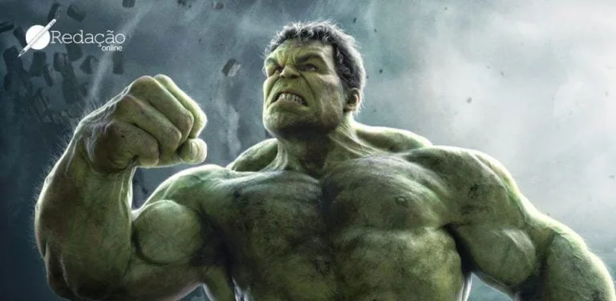
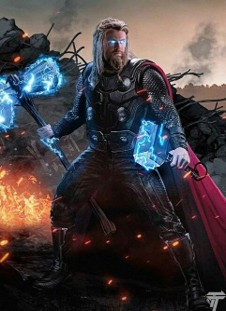

O universo Marvel é um dos maiores fenômenos da cultura pop mundial. Criado por grandes nomes como Stan Lee, Jack Kirby e Steve Ditko, ele apresenta uma vasta galeria de heróis que, além de seus poderes extraordinários, conquistam o público por sua humanidade, falhas e valores.
Entre os mais conhecidos está o Homem-Aranha, o jovem Peter Parker, que aprendeu que “com grandes poderes vêm grandes responsabilidades”. Sua história mostra que qualquer pessoa, mesmo um adolescente comum, pode ser um herói se agir com coragem e empatia.
Outro ícone é o Homem de Ferro (Tony Stark), um gênio bilionário que usa sua inteligência para criar uma armadura tecnológica e lutar contra o mal. Stark representa a redenção e a ideia de que até os mais imperfeitos podem mudar para o bem.
O Capitão América, por sua vez, simboliza a honra e o senso de justiça. Criado durante a Segunda Guerra Mundial, Steve Rogers é um exemplo de patriotismo e perseverança, sempre disposto a lutar pelo que acredita ser certo — mesmo quando está sozinho.
A Viúva Negra, o Pantera Negra, o Thor e o Hulk também mostram a diversidade e a complexidade do universo Marvel. Cada um enfrenta seus próprios conflitos internos, provando que ser herói não significa ser perfeito, mas sim lutar constantemente para fazer o que é certo.
Os heróis da Marvel inspiram milhões de pessoas ao redor do mundo, não apenas por suas batalhas épicas, mas por suas histórias de superação, amizade e esperança. Eles nos lembram de que, no fundo, todo mundo tem um herói dentro de si — basta ter coragem para agir.
O Hulk é o alter ego do cientista Bruce Banner, que se transforma em um monstro verde e poderoso quando fica com raiva. O personagem representa a luta entre a razão e a fúria dentro do ser humano. Embora muitas vezes incompreendido, o Hulk é um herói que usa sua força descomunal para proteger os inocentes. Sua história mostra que até o que há de mais destrutivo em nós pode ser usado para o bem.
Tony Stark é um gênio bilionário e inventor que cria uma poderosa armadura tecnológica para salvar sua vida e combater o crime. Diferente de muitos heróis, ele não possui poderes sobrenaturais — sua maior força é a inteligência. Ao longo de sua jornada, Stark aprende a usar sua riqueza e conhecimento para proteger os outros, mostrando que a verdadeira força vem da responsabilidade e do sacrifício.

O Capitão América é o símbolo da coragem e da justiça. Originalmente um jovem franzino durante a Segunda Guerra Mundial, Steve Rogers se voluntariou para um experimento que o transformou em um super-soldado. Com seu escudo indestrutível e seu forte senso de dever, ele lidera os Vingadores e defende os ideais de liberdade e igualdade. Mesmo fora de seu tempo, o Capitão nunca abandona seus princípios morais.

Thor é o príncipe de Asgard e o deus do trovão, inspirado na mitologia nórdica. Ele empunha o martelo mágico Mjölnir, que só pode ser levantado por quem for digno. Inicialmente arrogante, Thor aprende o verdadeiro significado de heroísmo ao lutar pela Terra e por seus amigos. Ele representa a força, lealdade e humildade, mesmo sendo um deus entre mortais.
O Homem-Aranha é um dos heróis mais populares da Marvel. Criado por Stan Lee e Steve Ditko, ele é um adolescente que ganha poderes após ser picado por uma aranha radioativa. Peter Parker passa a ter força, agilidade e a capacidade de escalar paredes. Mesmo com esses dons, ele enfrenta dificuldades típicas da vida real, como problemas financeiros e pessoais. Sua frase mais famosa, “com grandes poderes vêm grandes responsabilidades”, resume perfeitamente seu caráter e o peso de ser um herói.